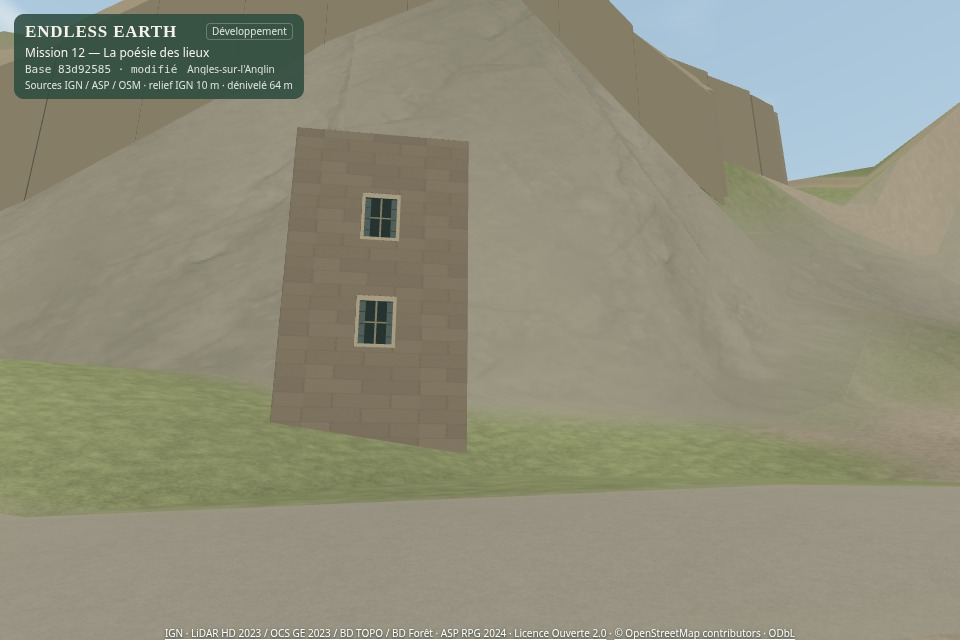
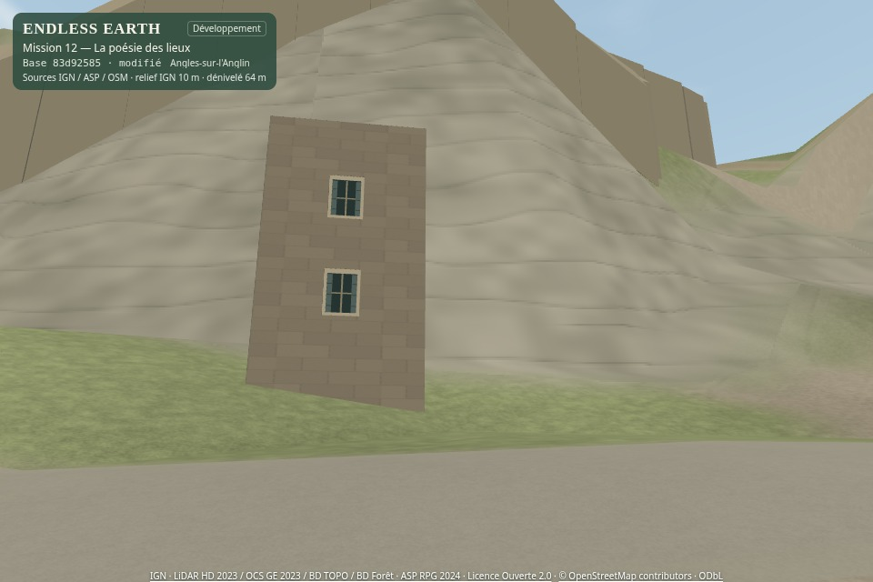

Les lieux, avant et après
À gauche : Mission 11 fusionnée, commit 83d9258. À droite : ce Jalon A. Images originales du moteur ; mêmes caméras, heure, météo, profil et résolution. Cliquer une image pour l’ouvrir en entier.
Une rue minérale
Équilibré · 960 × 640 · 2026-06-21T13:57:47.015Z
Caméra et position de référence
[-7.6, -27.66, -1.65, 0.35, 0, 'first']Coordonnées locales métriques, même matrice et même altitude source. Les stations de photographie ne prouvent pas un accès piéton réel.
Une prairie documentée
Équilibré · 960 × 640 · 2026-06-21T13:57:47.015Z
Caméra et position de référence
[-420, -320, 1, 0.3, 0, 'first']Coordonnées locales métriques, même matrice et même altitude source. Les stations de photographie ne prouvent pas un accès piéton réel.
La pente et la roche
Équilibré · 960 × 640 · 2026-06-21T13:57:47.015Z
Caméra et position de référence
[-80, 210, -0.75, -0.28, 0, 'first']Coordonnées locales métriques, même matrice et même altitude source. Les stations de photographie ne prouvent pas un accès piéton réel.
Au bord de l’Anglin
Équilibré · 960 × 640 · 2026-06-21T13:57:47.015Z
Caméra et position de référence
[-150, 245, -1.1, 0.12, 0, 'first']Coordonnées locales métriques, même matrice et même altitude source. Les stations de photographie ne prouvent pas un accès piéton réel.
La surface de l’eau
Équilibré · 960 × 640 · 2026-06-21T13:57:47.015Z
Caméra et position de référence
[-150, 245, -1.5, 0.42, 0, 'first']Coordonnées locales métriques, même matrice et même altitude source. Les stations de photographie ne prouvent pas un accès piéton réel.
La rivière dans le paysage
Équilibré · 960 × 640 · 2026-06-21T13:57:47.015Z
Caméra et position de référence
[-100, 155, 0.5, 0.5, 210, 'aerial']Coordonnées locales métriques, même matrice et même altitude source. Les stations de photographie ne prouvent pas un accès piéton réel.
La lumière du matin
Équilibré · 960 × 640 · 2026-06-21T05:33:11.000Z
Caméra et position de référence
[-150, 245, -1.5, 0.2, 0, 'first']Coordonnées locales métriques, même matrice et même altitude source. Les stations de photographie ne prouvent pas un accès piéton réel.
La pluie du soir
Équilibré · 960 × 640 · 2026-06-21T19:27:25.000Z
Caméra et position de référence
[-150, 245, -1.5, 0.2, 0, 'first']Coordonnées locales métriques, même matrice et même altitude source. Les stations de photographie ne prouvent pas un accès piéton réel.
Une vraie promenade
Captures natives du canvas WebGL et du son réel du jeu, sans accélération ni normalisation du son. Le personnage suit les voies OSM avec le contrôleur et les collisions habituels. Ces clips courts ne remplacent pas un test de longue marche.
Avant · promenade automatique, 32 secondesAprès · promenade automatique, 32 secondes
Pause près de la rivière
Station d’inspection distincte sur la berge. Passage du matin clair au soir pluvieux par les commandes ordinaires du jeu. Ce plan séparé n’est pas présenté comme la continuation du parcours précédent.
Le coût du rendu
Chromium / SwiftShader · 800 × 600 · trois passages · douze échantillons par version et station. Ordre avant/après alterné. Temps médian de rendu synchronisé avec lecture RGBA, en millisecondes ; ce ne sont pas des FPS sur GPU physique.
| Profil | Station | Avant ms | Après ms | Écart | Appels / triangles identiques |
|---|
| Éco | Une rue minérale | 205.6 | 219.2 | +6.7 % | 104 / 203,503 |
|---|
| Éco | Une prairie documentée | 111.6 | 135.0 | +20.9 % | 40 / 58,250 |
|---|
| Éco | La pente et la roche | 193.2 | 208.9 | +8.2 % | 159 / 202,390 |
|---|
| Éco | La surface de l’eau | 106.3 | 125.8 | +18.2 % | 120 / 190,507 |
|---|
| Équilibré | Une rue minérale | 250.3 | 261.2 | +4.3 % | 104 / 205,259 |
|---|
| Équilibré | Une prairie documentée | 104.8 | 131.6 | +25.6 % | 40 / 64,678 |
|---|
| Équilibré | La pente et la roche | 227.3 | 262.0 | +15.2 % | 159 / 236,650 |
|---|
| Équilibré | La surface de l’eau | 112.4 | 139.3 | +24.0 % | 123 / 200,855 |
|---|
| Qualité | Une rue minérale | 238.5 | 257.5 | +8.0 % | 106 / 205,963 |
|---|
| Qualité | Une prairie documentée | 111.2 | 151.7 | +36.4 % | 40 / 64,678 |
|---|
| Qualité | La pente et la roche | 200.0 | 255.5 | +27.7 % | 159 / 236,650 |
|---|
| Qualité | La surface de l’eau | 117.3 | 144.9 | +23.5 % | 123 / 200,855 |
|---|
Deux textures partagées supplémentaires, environ 0,75 Mo de fichiers et 7,02 Mio de stockage RGBA avec mipmaps estimé. Aucune multiplication des objets. Le surcoût logiciel reste explicite ; la validation sur GPU physique et Android est encore nécessaire.
Choisir une matière
Comparaison de la roche CC0 sélectionnée et d’une alternative procédurale, dans le moteur, avec la même teinte régionale et la même caméra. La photo n’est pas une observation d’Angles ; elle fournit une matière générique et reste distincte de la géographie.

Rock Face 03 · retenue, CC0
Alternative procédurale · étudeCatalogue et provenanceLicence CC0Autres bibliothèques étudiées
Ce qui reste à apprécier
La richesse à distance de marche, le grain des sols, la répétition, l’harmonie roche/végétation et le mouvement de l’eau demandent votre évaluation. Les limites du relief à 10 m, les bâtiments sur pentes et les ruines illustratives restent visibles ; aucun changement caché de géométrie ne les masque.
Jalon A uniquement. La PR reste en brouillon. Aucune fusion ni publication de production ; votre accord explicite est attendu avant le Jalon B.